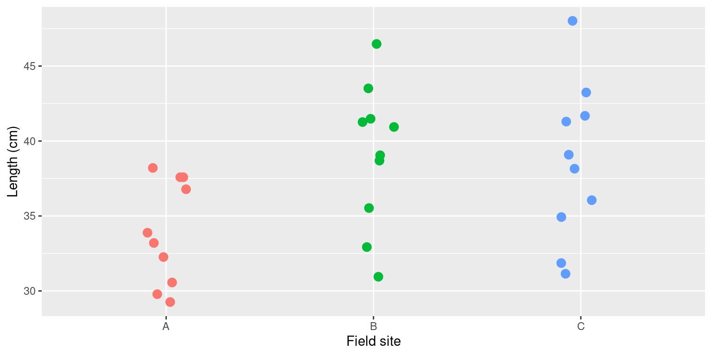
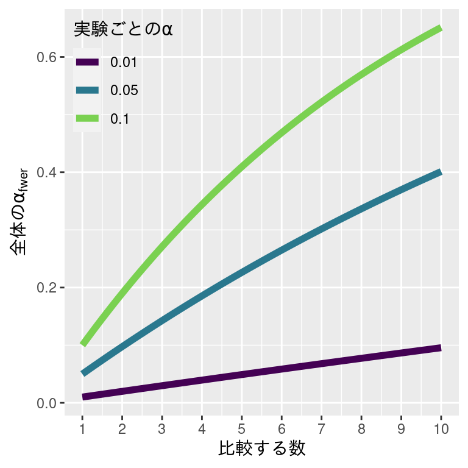
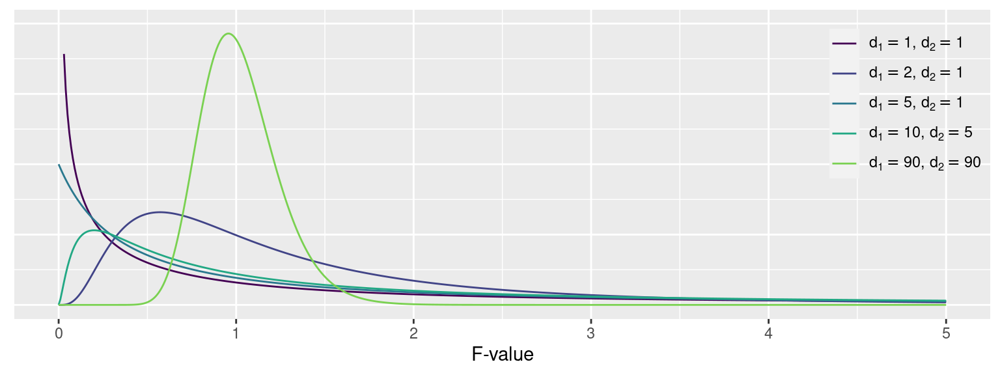
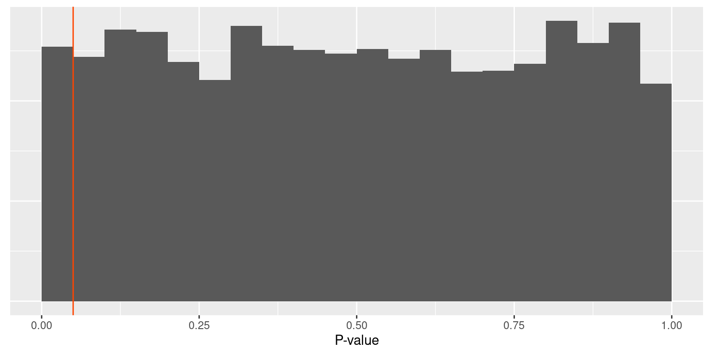
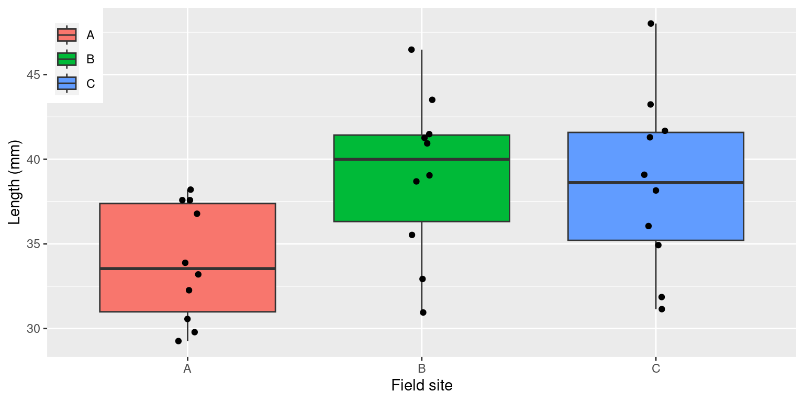

| Test | t-value | d.f. | p-value |
|---|---|---|---|
| A-B | -2.778 | 16.373 | 0.0132 |
| A-C | -2.333 | 15.532 | 0.0334 |
| B-C | 0.239 | 17.838 | 0.8141 |
分散分析の紹介
2023-09-24
3つの沿岸域（A, B, and C）のアマモ (Zostera marina) を採取しました。 作業仮説は「アマモの全長は沿岸域によって，長さがことなる」です。
3 カ所の全長を比較するのであれば，次のような組み合わせを考えられます。
t 検定を 3 回実行して，比較してみたら，結果は次の通りです。
| Test | t-value | d.f. | p-value |
|---|---|---|---|
| A-B | -2.778 | 16.373 | 0.0132 |
| A-C | -2.333 | 15.532 | 0.0334 |
| B-C | 0.239 | 17.838 | 0.8141 |
NHST （帰無仮説の有意性検定）によると，A–B と A–C の帰無仮説は棄却できますが，B–C の帰無仮説の棄却はできません。
\(\alpha\) は有意水準ですが，第 1 種の誤りを起こす確率でもあります。つまり，\(\alpha\) は帰無仮説が正しくても誤って棄却する確率です。
アマモの全長の解析には，t 検定を 3 回しました。1 回の検定にかかる第 1 種の誤りは 0.05 でしたが，3 回も検定したので（多重仮説検定），全体の第 1 種の誤りを起こす確率は次の通りです。
\[ α_{all}=1-(1-α)_{\text{A-B}}(1-α)_{\text{A-C}}(1-α)_{\text{B-C}} = 1-0.95^3 = 0.1426 \]
多重仮説検定をするときに，全ての仮説の中から少なくとも 1 つの正しい帰無仮説が誤って棄却されてしまう確率が \(\alpha_{\text{fwer}}\) です。
\[ \alpha_{\text{fwer}} = 1 - (1-\alpha)^n \]
全体の \(\alpha\) 過誤をおさえたければ，各実験の \(\alpha\) を抑えれことが必要です。

fwer: family-wise error rate （ファミリーワイズエラー率）
一元配置分散分析 (One-way ANOVA) は， 1つの要因（因子, factor）A の複数の水準（群, group, level） A1, A2, …, Ap にたいして，各水準の母平均の差を検証するための検定です。
帰無仮説: \(\mu_1 = \mu_2 = \cdots = \mu_p\)
全水準の平均値は等しい
解析に使うモデルの次の方程式で定義します。
\[ x_{ij} = \mu + \alpha_i + \epsilon_{ij} \]
\(\mu\) は総平均値，\(x_{ij}\) は水準 \(i\) の指数 \(j\) の観測値です。\(\alpha_i\) は\(\mu\) に対する水準 \(i\) の効果です。\(\epsilon_{ij}\) はお互いに独立に正規分布 \((N(0, \sigma^2))\) に従う誤差項です。ただし，\(\sum_{i=1}^n \alpha_i = 0\) とします。このとき，帰無仮説は \(\alpha_1 = \alpha_2 = \cdots = \alpha_n\) です。
| 要因 | 自由度 (df) | 平方和 (SS) | 平均平方 (MS) | F値 | P値 |
|---|---|---|---|---|---|
| A | \(df_A = I-1\) | \(SS_A\) | \(MS_A = SS_A / df_A\) | \(MS_A / MS_R\) | \(qf(1-α, df_A, df_R)\) |
| e | \(df_R = I(J-1)\) | \(SS_R\) | \(MS_R = SS_R / df_R\) | ||
| \(df_T =IJ-1\) | \(SS_T\) |
\(A\) は要因, \(e\) は残渣（誤差項）,\(I\) は水準の数, \(J\) は標本の数です。\(SS_A\) は水準間平方和，\(SS_R\) は残渣平方和, \(SS_T\)は総平方和です。\(MS_A\) は水準間平均平方，\(MS_R\) は残渣平均平方です。F値は平均平方の比です。水準間の平均値に対して，誤差（ばらつき，残渣）が大きいと，残渣平均平方も大きくなります。F値の分母が分子より大きくなったら，帰無仮説を棄却しにくくなります。
\[ \underbrace{\sum_{i=1}^I\sum_{j=1}^J(x_{ij} - \overline{\overline{x}})^2 }_{\text{総平方和}\;(SS_T)} = \overbrace{J\sum_{i=1}^I(\overline{x}_{i}+\overline{\overline{x}})^2}^{\text{水準間平方和}\;SS_A} + \underbrace{\sum_{i=1}^I\sum_{j=1}^J(x_{ij} - \overline{x}_i)^2}_{\text{残渣平方和}\;SS_R} \]
\(\bar{x}_i\) は標本平均，\(\bar{\bar{x}}\) は総平均です。
残渣平均平方は Field site (site 変数) ごとの残渣に影響されます。残渣のばらつきが小さいほど，残渣平均平方が小さくなります。 総平均に対する Field site の効果が大きければ，水準間平均平方が大きくなります。
The simulated data case, where the MS of the site is larger than the MS of the residuals.
水準間平均平方 (site: Mean Sq) はかわらないが，残渣平均平方 (Residuals: Mean Sq) は小さくなった。
水準間平均平方 (site: Mean Sq) はかわらないが，残渣平均平方 (Residuals: Mean Sq) は大きくなった。
分散分析で求める統計量は F値 とよびます。
\[ F = \left . \frac{SS_A}{I-1} \right / \frac{SS_R}{I(J-1)} = \frac{MS_A}{MS_R} \]
F値は自由度 \(I-1, I(J-1)\) のF分布に従います。
\[ P(x|d_1, d_2) = \frac{1}{\mathrm{B}\left(\frac{d_1}{2}, \frac{d_2}{2}\right)}\left(\frac{d_1}{d_2}\right)^{\left(\frac{d_1}{2}\right)}x^{\left(\frac{d_1}{2}-1\right)}\left(1+\frac{d_1}{d_2}x\right)^{\left(-\frac{d_1+d_2}{2}\right)} \]
\(\mathrm{B}(d_1, d_2)=\int_0^1t^{x-1}(1-t)^{y-1}dt\) はベータ関数，\(d_1\) と \(d_2\) は正数です。\(x\) が確率変数です。
分散分析に次の仮定が定義されています。
Rでは，いろんな方法で分散分析ができます。
Df Sum Sq Mean Sq F value Pr(>F)
site 2 161.7 80.84 3.896 0.0326 *
Residuals 27 560.2 20.75
---
Signif. codes: 0 '***' 0.001 '**' 0.01 '*' 0.05 '.' 0.1 ' ' 1 Df Sum Sq Mean Sq F value Pr(>F)
site 2 161.7 80.84 3.896 0.0326 *
Residuals 27 560.2 20.75
---
Signif. codes: 0 '***' 0.001 '**' 0.01 '*' 0.05 '.' 0.1 ' ' 1実は，oneway.test(), aov(), と lm() 関数で分散分析ができます。 不等分散のとき，oneway.test() はウェルチの分散分析を実行してくれますが，一般的につかわれていません。 さらに，oneway.test() の結果から解析の診断や多重仮説検定を簡単にできません。 aov() は lm() ラッパー (wrapper) なので，aov() を実行したとき，裏で lm() が実行されます。
Balanced one-way analysis of variance power calculation
k = 3
n = 4.381443
f = 1
sig.level = 0.05
power = 0.8
NOTE: n is number in each group一元配置分散分析の検出力は 0.80，\(\alpha\) は 0.05， 水準の数は 3，標本平均の最小と最大の差（効果）は 1， 残渣平均平方と効果の比を 1 にしたとき，各群の標本数を求めました。 このときの効果は 1 としましたが，lambda (\(\lambda\)) の方程式は次のとおりです。
\[ \lambda = \frac{\sum_{j-1}^Jn\beta_j}{\sigma_e^2} \] \(\beta_j\) は \(j\) 水準の効果，\(n\) は \(j\) 群の標本数，\(\sigma_e^2\) は母分散です。 \(n\), \(\beta_j\), \(\sigma_e^2\) は未知なので，客観的に選ぶ必要があります。
必要な標本数は n = \(4.38 \rightarrow 5\) でした。
帰無仮説が正しいとき，分散分析のP値は一様分布します。 シミュレーションの水準数は 3，各水準の標本数は 10，等分散には従っています。
bartlett.test())car パケージに leveneTest() があります。)最初の紹介した海域ごとのアマモの全長を解析します。
作業仮説： アマモの全長は沿岸域によって，長さがことなる
帰無仮説： アマモの海域ごとの全長は等しい \((\mu_A = \mu_B = \mu_C)\)
対立仮説： 一つ以上のアマモの海域ごとの全長は異なる \((\mu_A \neq \mu_B |\mu_A \neq \mu_C|\mu_B \neq \mu_C)\)
2019年3月1日に沿岸A，沿岸B，沿岸Cにおいて，各沿岸域から無作為に 10 個体のアマモを採取して，定規で全長を測定した。
帰無仮説を検証するために，一元配置分差分析を実施する。
データ数が少ないのとき，散布図でも問題ないです。
箱ひげ図を確認すると，不等分散性の問題はないように見えないが，検定をかけて確認できます。site ごとの不偏分散は次の通りです。
Site A の分散は Site B と Site C と比べると約半分ぐらいです。
バートレット検定 は正規分布に従わないデータに強く影響されますので，誤った結果になる可能性があります。，
Bartlett test of homogeneity of variances
data: data by site
Bartlett's K-squared = 1.5442, df = 2, p-value = 0.462ルービン検定 は正規分布に従わないデータに対してロバスト (robust, 頑健) です。；
どちらも，帰無仮説を棄却する結果を示していないので，水準ごとの分散は等しいと解釈できます。
等分散性に問題なかったので，分散分析をします。
分散分析表には，自由度 (Df)，平方和 (Sum Sq)，平均平方 (Mean Sq)，F値 (F value)，P値 (Pr(>F)) がでます。 P値は有意水準 (α = 0.05) より低いので，帰無仮説 (\(\mu_A = \mu_B = \mu_C\)) を棄却します。帰無仮説が正しかったら，このデータはとても珍しいです。
Residual vs. site と Residual vs. Fitted Value の図は残渣の性質を確認するための図です。 この二つの図で確認するのは，残渣のばらつきとばらつきの性質です。ばらつきが説明変数となんかしらの関係があれば，解析に問題があると示します。Normal-QQ Plot は残渣の正規性を確認するための図です。残渣は正規分布に従えば，赤線とかさなります。この結果をみると，正規性に問題はないが，期待値が高いときの残渣のばらつきは期待値の低いときのばらつきより大きいです。
結果の報告について，まずは分散分析表の記述が必要です。
文中に記述するなら，次のとおりです。
沿岸域によってアマモの全長が異なるかを，一元配置分散分析によって検討したところ，沿岸域 \((F_{(2, 27)} = 3.90, P = 0.0326)\) の効果は有意だった。
F値，自由度，P値を記述することがポイントです。
分散分析に帰無仮説を棄却したら，\(\mu_1 \ne \mu_2 \ne \cdots \ne \mu_p\) と考えられるが， 水準ごとの違いは明らかではないです。多重比較はペアごとの平均値を比較するときにつかう手法です。2 種類の多重比較があります。
事前比較のとき，第 1 種の誤りは分散分析の \(\alpha\) と同じです。 事後比較のとき，第 1 種の誤りを新たに求める必要があります。
確率変数 \(x_1, x_2, \cdots, x_p\) の線型結合は次のように定義します。
\[ L = c_1 x_1 + c_2 x_2 + \cdots + c_p x_p \] このとき，\(c_i\) はあらかじめ決めたモデル係数です。
事前比較のとき，あらかじめ決めたモデル係数と平均値の積和（線型結合）はつぎのとおりです。\(\Lambda\) は大文字のラムダ (\(\lambda\)) です。
\[ \Lambda = \sum_i c_i \mu_i \]
水準 \(i\) の平均値 \(\mu_i\) の対比は先ほどの式で表せます。 このとき，\(c_i\) はモデルの係数です。
\[ \sum_i c_i = 0 \] 事前比較の線型結合は上の条件を満たさなければなりません。
一般的な線型結合の例
\[ L = \left(\frac{1}{p}\right)x_1 +\left(\frac{1}{p}\right)x_2 +\cdots +\left(\frac{1}{p}\right)x_p \] 事前比較の線型結合の例
\[ L = \left(\frac{1}{3}\right)x_1 + \left(\frac{1}{3}\right)x_2 + \left(\frac{1}{3}\right)x_3 - \left(\frac{1}{2}\right)x_4 - \left(\frac{1}{2}\right)x_5 \] \(\rightarrow\) 事前比較の係数の和は \(\frac{1}{3}+\frac{1}{3}+\frac{1}{3}-\frac{1}{2}-\frac{1}{2}=0\).
直交対比 (orthogonal contrasts) は特別な線型結合です。
複数 (\(k\)) の対比 (\(\Lambda_j = \sum_i c_{ji}\mu_i\), \(\Lambda_k = \sum_i c_{ki}\mu_i\)) があった場合，
\[ \sum_i \frac{c_{ji}c_{ki}}{n_i}= 0 \] さらに上の条件を満たさなければなりません。
\(\mu_1\), \(\mu_2\), \(\mu_3\) の平均値と関係するモデル係数の線型結合は次の用な形をとります。
\[ \Lambda = \overbrace{c_1 \mu_1}^{p=1} + \overbrace{c_2 \mu_2}^{p=2} + \overbrace{c_3 \mu_3}^{p=3} \] 最大 \(p-1\) の直交比較は設定できます。このとき，\(p=3\) なので，直交比較の数は \(2\) です。つまり，ここで設定できる直交比較は \[ \begin{aligned} A &= a_1 \mu_1 + a_2 \mu_2 + a_3 \mu_3 \\ B &= b_1 \mu_1 + b_2 \mu_2 + b_3 \mu_3 \end{aligned} \]
問題は，\(\sum_i a_i = 0\)，\(\sum_i b_i = 0\)，\(\sum_i \frac{a_i b_i}{n_i}=0\) を満たす係数をきめることです。
係数の組み合わせは無限にありますが，実際には仮説をたててきめます。このとき，\(\mu_1 = \mu_2\) と \(\frac{1}{2}(\mu_1 + \mu_2) = \mu_3\) が多重比較の帰無仮説としたら，直交比較は次のとおりです。
\[ \begin{aligned} A &= 1 \mu_1 + (-1) \mu_2 + 0 \mu_3 \\ B &= 1 \mu_1 + 1 \mu_2 + (-2) \mu_3 \end{aligned} \]
ファミリーワイズエラー率は多重仮説検定をするときに，全ての仮説のなで，少なくとも１つの第１種の過誤を起こす確率です。FWER の決め方に，数種類の手法があります。
Bonferroni’s correction
Sidak’s procedure
Holmes-Bonferroni’s procedure
Dunnet’s correction
\(\mu_\text{setosa} = \mu_\text{versicolor} = \mu_\text{virginica}\) の帰無仮説でなくて，\(\mu_\text{setosa} = \mu_\text{versicolor}\) と \(\mu_\text{setosa} = \mu_\text{virginica}\) が帰無仮説です。
線型結合は次のとおりです。 \[ \begin{aligned} A &= 1 \mu_\text{setosa} - 1 \mu_\text{versicolor} + 0 \mu_\text{virginica} \\ B &= 1 \mu_\text{setosa} + 0 \mu_\text{versicolor} - 1 \mu_\text{virginica} \\ \end{aligned} \]
このときの 2 回比較するので（帰無仮説は２つある），(\(\alpha_{fwer} = 0.05\)) をするなら，ボンフェローニ補正で補正した\(\alpha_{twer} = \alpha / 2 = 0.025\) です。直交比較ではないので，帰無仮説は独立していないので，棄却した場合慎重に解釈したほうがいい。
\(\mu_\text{setosa} = \mu_\text{versicolor} = \mu_\text{virginica}\) の帰無仮説でなくて，\(\mu_\text{setosa} = \mu_\text{versicolor}\) と \(\frac{1}{2}(\mu_\text{setosa} +\mu_\text{versicolor})= \mu_\text{virginica}\) が帰無仮説です。
線型結合は次のとおりです。 \[ \begin{aligned} A &= 1 \mu_\text{setosa} - 1 \mu_\text{versicolor} + 0 \mu_\text{virginica} \\ B &= 1 \mu_\text{setosa} + 1 \mu_\text{versicolor} - 2 \mu_\text{virginica} \\ \end{aligned} \]
このときも 2 回比較しているので，各帰無仮説のαは ボンフェローニ補正で補正したものを使用します (\(\alpha_{twer} = \alpha / 2 = 0.025\))。直交比較なので，帰無仮説は独立しています。
アヤメのデータをつかって事前比較を初回します。まず，データの準備です。
In R contrasts() does not return the coefficient for the first level, because it is implicitly 1. But when assigning a contrast matrix, the matrix can be of size JxJ and the first level can be set.
Rでは，すでに設定されている比較があります。数種類の対比行列は関数で設定できます。
contr.treatment())contr.helmert())contr.sum())contr.poly())contr.SAS())実際には，これらの関数はコーディング行列を返します。 Rでは，contr.treatment() がデフォルトの比較です。
Rのデフォルト事前比較は処理対比です。線型結合の式は次の通りです。
\[ \begin{aligned} \Lambda_1 &= 1 \times \text{setosa} - 1 \times \text{versicolor} + 0 \times\text{virginica} \\ \Lambda_2 &= 1 \times \text{setosa} + 0 \times \text{versicolor} - 1 \times\text{virginica} \end{aligned} \]
このときの帰無仮説は
contrasts() 関数をつかって，アヤメのコーディング行列を確認します。
対比行列に変換するには，列に 1 を代入した列行列を先に足して，その行列の逆行列をもとめる必要があります。
コーディング行列から対比行列への変換
1 2 3
1 0 0
2 -1 1 0
3 -1 0 1setosa の平均値setosa と versicolor の平均値の差setosa と virginica の平均値の差m1 = lm(Petal.Length ~ Species, iris_new)
m1 %>%
summary.aov(split = list(Species =list("setosa:versicolor" = 1,
"setosa:virginica" = 2))) Df Sum Sq Mean Sq F value Pr(>F)
Species 2 437.1 218.6 1180.2 <2e-16 ***
Species: setosa:versicolor 1 18.9 18.9 102.1 <2e-16 ***
Species: setosa:virginica 1 418.2 418.2 2258.3 <2e-16 ***
Residuals 147 27.2 0.2
---
Signif. codes: 0 '***' 0.001 '**' 0.01 '*' 0.05 '.' 0.1 ' ' 1事前比較を指定したときに分散分析表です。setosa 対 versicolor の対比の有意性はとてもたかいです。\(P \leq 2\times 10^{-16}\) でした。 setosa 対 virginica の結果も同じです。平均値の差は次のように計算します。 このとき，(Interecept) は setosa の平均値です。
\[ \begin{aligned} \Lambda_1 &= 1 \times \text{setosa} - 1 \times \text{versicolor} + 0 \times\text{virginica} \\ \Lambda_2 &= 0 \times \text{setosa} + 1 \times \text{versicolor} - 1 \times\text{virginica} \end{aligned} \]
次の帰無仮説は下記のとおりです。
対比行列はつぎのとおりです。
Z = X %>% solve()
m2 = lm(Petal.Length ~ Species, iris_new,
contrasts=list(Species = Z[, -1]))
m2 %>% summary.aov(split = list(Species = list("setosa - versicolor" = 1,
"versicolor - virginica" = 2))) Df Sum Sq Mean Sq F value Pr(>F)
Species 2 437.1 218.6 1180.2 <2e-16 ***
Species: setosa - versicolor 1 395.4 395.4 2135.0 <2e-16 ***
Species: versicolor - virginica 1 41.7 41.7 225.3 <2e-16 ***
Residuals 147 27.2 0.2
---
Signif. codes: 0 '***' 0.001 '**' 0.01 '*' 0.05 '.' 0.1 ' ' 1 Estimate Std. Error t value Pr(>|t|)
(Intercept) 1.462 0.06085848 24.02294 9.303052e-53
Species1 2.798 0.08606689 32.50960 5.254587e-69
Species2 1.292 0.08606689 15.01158 1.810597e-31We can also get the F-values with this code.
aov(m1) %>%
summary(split = list(Species = list(versicolor = 1, virginica = 2)))\[ \begin{aligned} \Lambda_1 &= 1 \times \text{setosa} - 1 \times \text{versicolor} + 0 \times\text{virginica} \\ \Lambda_2 &= 1 \times \text{setosa} + 1 \times \text{versicolor} - 2 \times\text{virginica} \end{aligned} \]
次の帰無仮説は下記のとおりです。
対比行列はつぎのとおりです。
Z = X %>% solve()
m3 = lm(Petal.Length ~ Species, iris_new,
contrasts=list(Species = Z[, -1]))
m3 %>% summary.aov(split = list(Species = list("setosa - versicolor" = 1,
"mean - virginica" = 2))) Df Sum Sq Mean Sq F value Pr(>F)
Species 2 437.1 218.55 1180 <2e-16 ***
Species: setosa - versicolor 1 195.7 195.72 1057 <2e-16 ***
Species: mean - virginica 1 241.4 241.38 1303 <2e-16 ***
Residuals 147 27.2 0.19
---
Signif. codes: 0 '***' 0.001 '**' 0.01 '*' 0.05 '.' 0.1 ' ' 1 Estimate Std. Error t value Pr(>|t|)
(Intercept) 1.462 0.06085848 24.02294 9.303052e-53
Species1 2.798 0.08606689 32.50960 5.254587e-69
Species2 -5.382 0.14907223 -36.10330 5.858996e-75There is only one way to partition the sum-of-squares, so all of the sum-of-squares, regardless of the comparison are the same!
lm(Petal.Length ~ Species, iris_new,
contrasts=list(Species = contr.helmert(3))) %>%
summary.aov(split = list(Species = list(a = 1, b = 2)))
lm(Petal.Length ~ Species, iris_new,
contrasts=list(Species = contr.diff(3))) %>%
summary.aov(split = list(Species = list(a = 1, b = 2)))
lm(Petal.Length ~ Species, iris_new,
contrasts=list(Species = contr.treatment(3))) %>%
summary.aov(split = list(Species = list(a = 1, b = 2)))
lm(Petal.Length ~ Species, iris_new,
contrasts=list(Species = contr.sum(3))) %>%
summary.aov(split = list(Species = list(a = 1, b = 2)))事前に比較を検討しなかった場合，事後の比較も可能です。事後比較も数種類あります。
他にもありますが，ダンカンとフィッシャーの検定は第 1 種の過誤を起こしやすいです。 最初の4つは，ペアごとの比較をしますが，ダネットの検定は基準水準との比較だけします。
Pairwise comparisons using t tests with pooled SD
data: iris_new$Petal.Length and iris_new$Species
setosa versicolor
versicolor <2e-16 -
virginica <2e-16 <2e-16
P value adjustment method: bonferroni ボンフェロニ法でファミリワイズエラー率を調整するとき，\(\alpha_{\text{fwer}} = \alpha / m\) です。 ここで表示されている P 値は t 検定で求めたP値と \(m\) の積です。
Pairwise comparisons using t tests with pooled SD
data: iris_new$Petal.Length and iris_new$Species
setosa versicolor
versicolor <2e-16 -
virginica <2e-16 <2e-16
P value adjustment method: holm ボンフェロニ法ににていますが，有意水準を対比ごとに変えます。 まず，P値の低い値から高い値に並べます。 最初のP値の有意水準は \(\alpha / m\) です。次のP値の有意水準は \(\alpha / (m-1)\) です。 このように，有意水準を徐々に \(\alpha\) に戻します。 ここで表示されているP値も t 検定で求めたP値と \(m\) の積です。
Tukey multiple comparisons of means
95% family-wise confidence level
Fit: aov(formula = .)
$Species
diff lwr upr p adj
versicolor-setosa 2.798 2.59422 3.00178 0
virginica-setosa 4.090 3.88622 4.29378 0
virginica-versicolor 1.292 1.08822 1.49578 0テューキーのHSD法は各2水準間の平均値の差の検定を行っています。 t 検定とちがって，求めた統計量はステューデント化範囲の分布にしたます。
mout = lm(Petal.Length ~ Species, iris_new)
dferror = df.residual(mout); mserror = deviance(mout)/dferror; fc = summary(mout)$fstatistic
agricolae::scheffe.test(aov(mout), trt = "Species", # 因子
DFerror = dferror, MSerror=mserror, Fc = fc, group = T, console = TRUE)
Study: aov(mout) ~ "Species"
Scheffe Test for Petal.Length
Mean Square Error : 0.1851878
Species, means
Petal.Length std r Min Max
setosa 1.462 0.1736640 50 1.0 1.9
versicolor 4.260 0.4699110 50 3.0 5.1
virginica 5.552 0.5518947 50 4.5 6.9
Alpha: 0.05 ; DF Error: 147
Critical Value of F: 3.057621
Minimum Significant Difference: 0.2128349
Means with the same letter are not significantly different.
Petal.Length groups
virginica 5.552 a
versicolor 4.260 b
setosa 1.462 cこの手法は分散分析のF値と残渣平均平方を用いて，ペア毎の比較を行います。 テューキーのHSD法の方が検出力高いので，一般的に使われていません。
Dunnett's test for comparing several treatments with a control :
95% family-wise confidence level
$versicolor
diff lwr.ci upr.ci pval
setosa-versicolor -2.798 -2.99024 -2.60576 2.2e-16 ***
virginica-versicolor 1.292 1.09976 1.48424 < 2e-16 ***
---
Signif. codes: 0 '***' 0.001 '**' 0.01 '*' 0.05 '.' 0.1 ' ' 1因子の水準にコントロールがあるとき，他の水準をコントロールと比較することがあります。 このとき，ダネットの検定を使います。対比を制限したテューキーのHSD法もつかえます。
実は，最初から多重比較をするつもりであれば，分散分析をする必要はないです。 分散分析をすることにより，\(\alpha_{\text{fwer}}\) をあえて上げています。ところが， 有意性のある分散分析を求めてから，多重仮説検定を行なうことが一般です。
ANOVA procedure で有意な結果がでて，さらに残渣・正規性に問題がなかったので，多重仮説検定をおこないます。
分散分析の結果は：\(F_{(2, 27)} = 3.90, P = 0.0326\) でした。\(\mu_A=\mu_B=\mu_C\) を棄却しました。
Pairwise comparisons using t tests with pooled SD
data: X$data and X$site
A B
B 0.017 -
C 0.031 0.795
P value adjustment method: none ファミリワイズエラー率を調整していないときのペアごとの t 検定によって， \(\mu_A =\mu_B\) と \(\mu_A =\mu_C\) を棄却できました。ところが，\(\alpha_\text{fwer}\) を調整していないので，第 1 種の過誤を起こす確率は \(1 - (1-\alpha)^m = 1 - (1-0.05)^3 = 0.1426\) ですので，誤って帰無仮説を棄却している可能性は十分あります。
分散分析の結果は：\(F_{(2, 27)} = 3.90, P = 0.0326\) でした。\(\mu_A=\mu_B=\mu_C\) を棄却しました。
Pairwise comparisons using t tests with pooled SD
data: X$data and X$site
A B
B 0.052 -
C 0.093 1.000
P value adjustment method: bonferroni ファミリワイズエラー率をボンフェロニ法で調整しましたが，ペアごと平均値の差に有意性のある結果は得られなかったが，A–B のP値は 0.052 でした。
分散分析の結果は：\(F_{(2, 27)} = 3.90, P = 0.0326\) でした。\(\mu_A=\mu_B=\mu_C\) を棄却しました。
Pairwise comparisons using t tests with pooled SD
data: X$data and X$site
A B
B 0.052 -
C 0.062 0.795
P value adjustment method: holm ホルム=ボンフェロニ法はボンフェロニ法と同様な結果でした。
分散分析の結果は：\(F_{(2, 27)} = 3.90, P = 0.0326\) でした。\(\mu_A=\mu_B=\mu_C\) を棄却しました。
Tukey multiple comparisons of means
95% family-wise confidence level
Fit: aov(formula = .)
$site
diff lwr upr p adj
B-A 5.1704004 0.1198744 10.220927 0.0440187
C-A 4.6347851 -0.4157410 9.685311 0.0767033
C-B -0.5356154 -5.5861414 4.514911 0.9626557テューキーのHSD法のとき，\(\mu_A = \mu_B\) を棄却できましたが，その他の ペアの帰無仮説を棄却できなかった。ところが，この解析手順に問題があります。このように，何度も多重仮説検定法を用いて，希望している結果がでるまでおこなうことは誤りです。この手法は P-fishing とよび，帰無仮説の有意性検定の概念に違反しています。 最初からテューキーのHSD法を使うべきでした。